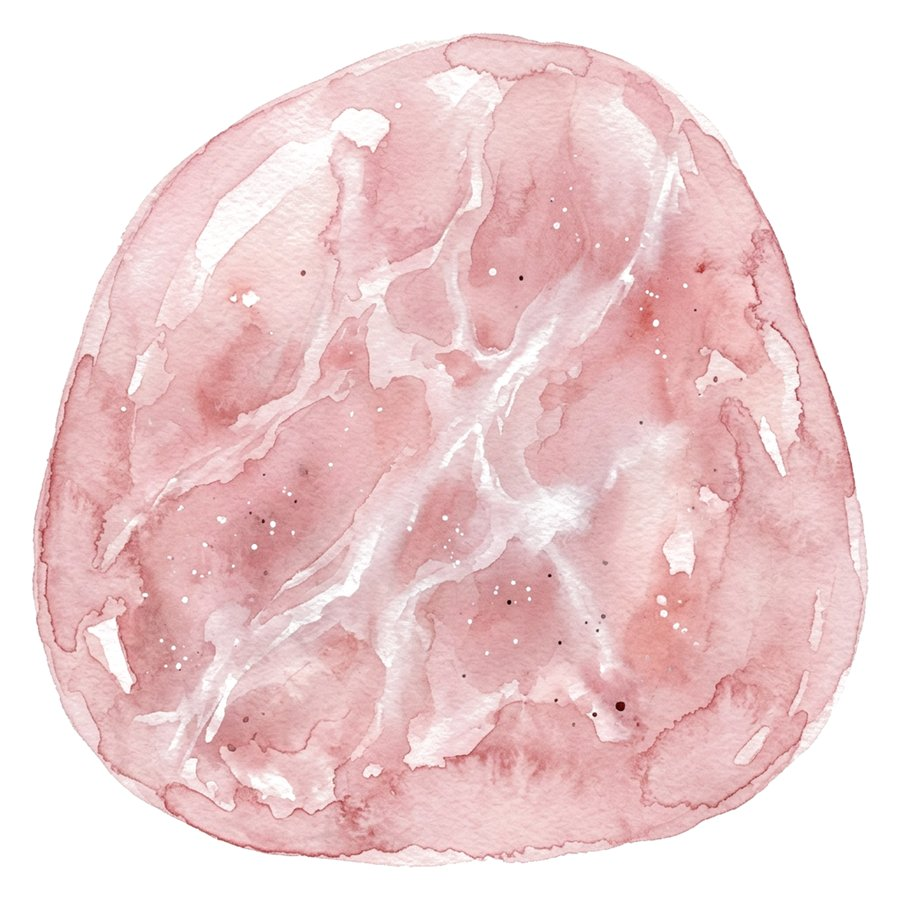

โรสควอตซ์ ความหมายตามความเชื่อ และวิธีดูว่าแท้ไหม
ตามความเชื่อไทย โรสควอตซ์เป็นหินของความรักและความอ่อนโยน สีชมพูตรงกับสีประจำวันอังคาร หินแท้มีสีขุ่นนวล ไม่ใสกริบ และเย็นมือกว่าแก้ว
- ชื่อหิน
- โรสควอตซ์ Rose Quartz
- สีประจำวัน
- วันอังคาร สีชมพู
- กลุ่มแร่
- ควอตซ์ ความแข็ง 7 จาก 10
- ตามความเชื่อ
- ความรัก ความอ่อนโยน การเปิดใจให้ตัวเอง
- ที่ร้านขาย
- ธรรมชาติ ไม่ย้อมสี ไม่แท้ คืนเงิน
ในบทความนี้ 6 หัวข้อ
โรสควอตซ์คือหินอะไร
โรสควอตซ์ (Rose Quartz) เป็นควอตซ์ชนิดหนึ่งที่มีสีชมพูอ่อนไปจนถึงชมพูกุหลาบ สีมาจากแร่ธาตุเล็ก ๆ ที่แทรกอยู่ในเนื้อหิน จึงมักขุ่นนวลมากกว่าใส เนื้อหินแข็ง 7 จาก 10 ตามมาตราโมห์ส ใส่ทุกวันได้โดยไม่ต้องกลัวรอยง่าย
ในกำไลหิน โรสควอตซ์เป็นหินที่คนเลือกเป็นเม็ดแรกบ่อยที่สุดเม็ดหนึ่ง เพราะสีอ่อนเข้ากับหินอื่นได้ง่าย และราคาไม่สูงเมื่อเทียบกับหินสีชมพูชนิดอื่น
ความหมายตามความเชื่อไทย
ตามความเชื่อ โรสควอตซ์เกี่ยวกับความรักในทุกแบบ ทั้งความรักกับคนอื่นและความอ่อนโยนกับตัวเอง คนที่เพิ่งผ่านเรื่องหนักใจมักเลือกใส่ไว้เป็นเครื่องเตือนใจให้ใจเย็นลง
“เราเล่าความหมายตามความเชื่อ ไม่ได้บอกว่าหินจะทำให้เกิดผลอะไร ความเชื่อเป็นเรื่องของใจคนใส่”
ในเรื่องสีประจำวันแบบไทย สีชมพูเป็นสีของวันอังคาร คนเกิดวันอังคารจึงมักมีโรสควอตซ์อยู่ในกำไลประจำวันเกิด ส่วนคนเกิดวันอื่นก็ใส่ได้ โดยเลือกเป็นเม็ดเสริมเรื่องความรัก
เหมาะกับใคร ใส่ข้อมือไหน
คนที่มักเลือกโรสควอตซ์คือคนที่อยากได้แรงหนุนเรื่องความรักและความสัมพันธ์ คนเกิดวันอังคาร และคนที่อยากได้หินสีอ่อนใส่ได้ทุกวัน เรื่องข้อมือมีความเชื่อเล่าต่อกันหลายแบบ แบบที่ได้ยินบ่อยมีสองข้อ
- ข้อมือซ้าย
- ฝั่งรับ ใส่เมื่ออยากเปิดใจรับความรักหรือความเมตตาเข้ามา
- ข้อมือขวา
- ฝั่งให้ ใส่เมื่ออยากส่งความอ่อนโยนออกไปถึงคนรอบตัว
ถ้าไม่แน่ใจ ใส่ข้างที่สบายมือก่อนได้เลย ส่วนถ้าอยากรู้ว่าหินไหนเข้ากับวันเกิดของคุณ ส่งวันเกิดให้เราช่วยเลือก
วิธีดูว่าโรสควอตซ์แท้ไหม
โรสควอตซ์ในตลาดมีสามแบบหลัก หน้าตาคล้ายกันจนแยกยากในรูป ลองเทียบจากสี่ข้อนี้ก่อนซื้อ
| ลักษณะ | ธรรมชาติ | ย้อมสี | แก้วหรือสังเคราะห์ |
|---|---|---|---|
| สี | ชมพูอ่อน เข้มอ่อนไม่เท่ากันทั้งเม็ด | ชมพูสดเกินจริง สีกองตามรอยร้าว | ชมพูเท่ากันทุกเม็ดเหมือนพิมพ์ |
| ความใส | ขุ่นนวล มองทะลุได้ไม่ชัด | ขุ่น ผิวมักดูแห้ง | ใสเกินไป หรือขุ่นแบบเรียบเนียน |
| ข้างในเม็ด | มีริ้ว รอยแตกลาย หรือจุดเล็ก ๆ | เส้นสีเข้มตามรอยแตก | ฟองอากาศกลม ๆ หรือว่างเปล่า |
| สัมผัส | เย็นมือ หนักกว่าที่คิด | เย็นมือเหมือนหินแท้ | อุ่นเร็ว น้ำหนักเบากว่า |
หินที่ติดป้ายว่าธรรมชาติ ถ้าพิสูจน์ได้ว่าไม่แท้ คืนเงินเต็มจำนวน อ่านนโยบายหินแท้
การดูแลรักษาโรสควอตซ์
โรสควอตซ์ซีดลงได้ถ้าโดนแดดจัดนาน ๆ เก็บไว้ในที่ร่มเมื่อไม่ได้ใส่ ล้างด้วยน้ำเปล่าแล้วเช็ดให้แห้ง เลี่ยงน้ำหอมและสบู่ที่จะทำให้ยางยืดเสื่อมเร็ว
ถ้าอยากชำระหินตามความเชื่อ คนส่วนใหญ่วางไว้ใต้แสงจันทร์หนึ่งคืน หรือวางบนก้อนควอตซ์ใส วิธีนี้ไม่ทำให้หินเสียหาย
คำถามที่พบบ่อย
โรสควอตซ์ใส่คู่กับหินอะไรได้บ้าง
ที่เห็นบ่อยคือมูนสโตนเรื่องความอ่อนโยน การ์เน็ตเรื่องความรักที่มั่นคง และอเมทิสต์เรื่องความสงบใจ ทั้งหมดเป็นการจับคู่ตามความเชื่อ
คนเกิดวันไหนไม่ควรใส่โรสควอตซ์
เรื่องสีกาลกิณีของแต่ละวันมีหลายตำรา ตำราหนึ่งอาจห้ามสีที่อีกตำราไม่ได้ห้าม ถ้ากังวล ส่งวันเกิดมาให้เราดูให้ก่อนเลือกเม็ดได้
โรสควอตซ์ใส่อาบน้ำได้ไหม
ตัวหินโดนน้ำได้ แต่สบู่และน้ำร้อนทำให้ยางยืดเสื่อมเร็ว ถอดก่อนอาบน้ำจะใช้ได้นานกว่า
ราคาโรสควอตซ์แท้ทำไมต่างกันมาก
ราคาขึ้นกับความใส สีที่สม่ำเสมอ ขนาดเม็ด และงานเจียร หินที่ใสและสีชัดหายากกว่าจึงแพงกว่า
เนื้อหานี้เล่าความหมายตามความเชื่อ ไม่ได้รับประกันผล และไม่ใช่คำแนะนำทางการแพทย์